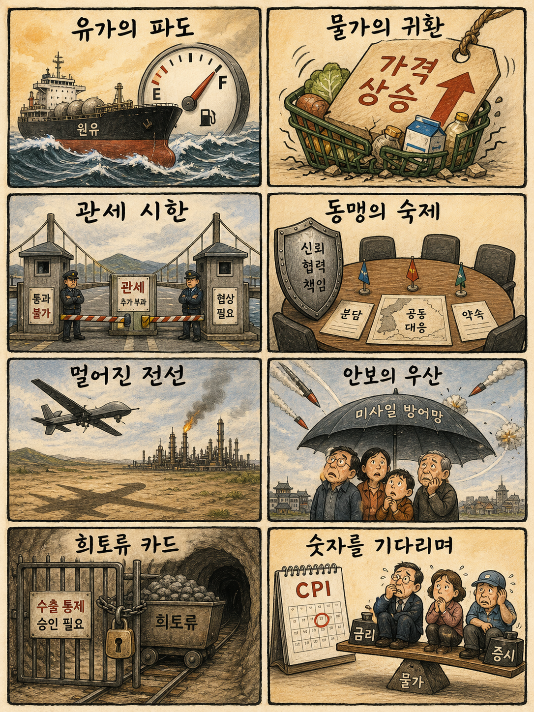
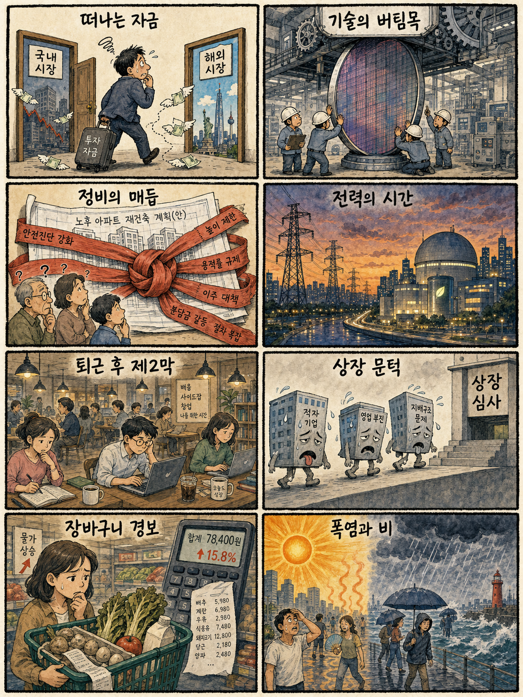

01
알파벳 · 355.90→343.80달러 · -3.40%
내용요약 CPI 경계와 대형 기술주 매도 속 정규장 시가 대비 크게 밀렸습니다.
예상여파 광고·클라우드 성장 기대와 별개로 빅테크 밸류에이션 부담이 국내 인터넷·성장주 심리를 누를 수 있습니다.
MORNING_BRIEFING_20260812
작성 시각: 2026-08-12 06:39 KST · 직전 미국 정규장과 2026-08-12 KST 당일 공개 기사 기준
직전 미국 정규장인 8월 11일에는 다우 -0.34%, S&P 500 -0.32%, 나스닥 -0.60%로 이틀째 약세를 보였습니다. 호르무즈 불확실성에 따른 유가 상승과 CPI 발표 경계가 대형 기술주를 눌렀습니다. 한국 증시는 전일 삼성전자 강세와 KOSPI 상승의 연속성을 시험하되, 미국 기술주 조정과 유가·환율 부담을 함께 소화할 전망입니다.
| 지수 | 종가 | 등락률 | 한국 증시 영향 |
|---|---|---|---|
| 다우존스 | 53,791.85 | -0.34% | 경기민감주 관망 |
| S&P 500 | 7,728.20 | -0.32% | 위험선호 둔화 |
| 나스닥 종합 | 26,445.45 | -0.60% | 성장주·반도체 부담 |
CPI 경계와 유가 부담에 기술주가 약세였습니다.
삼성전자 반등이 지수 회복을 이끌었습니다.
물가 재상승 여부가 오늘 위험선호의 핵심입니다.
확률·표본·손익비 문턱을 모두 통과한 후보가 없습니다.
8월 11일 보고서는 수급·컨센서스·보정 표본·손익비 문턱을 동시에 검증하지 못해 공식 추천을 내지 않았습니다. 실제 시가 기준으로 계산할 종목이 없으며 게시 당시 판단은 그대로 유지됩니다.
| 시장 | 종가 | 등락률 | 해석 |
|---|---|---|---|
| KOSPI | 6,345.53 | +0.73% | 대형 반도체 중심 반등 |
| KOSDAQ | 857.84 | +0.39% | 전일 급등 뒤 상승폭 축소 |
| 다우존스 | 53,791.85 | -0.34% | 유가·물가 경계 |
| S&P 500 | 7,728.20 | -0.32% | 위험선호 둔화 |
| 나스닥 | 26,445.45 | -0.60% | 대형 기술주 약세 |
삼성전자가 전일 4.13% 올라 지수 방어력을 보였습니다.
AI 전력 수요와 첨단 원전 논의가 이어졌습니다.
알파벳·아마존·엔비디아가 시가 대비 약세였습니다.
유가 상승과 CPI 경계가 비용 부담을 높입니다.
내용요약 CPI 경계와 대형 기술주 매도 속 정규장 시가 대비 크게 밀렸습니다.
예상여파 광고·클라우드 성장 기대와 별개로 빅테크 밸류에이션 부담이 국내 인터넷·성장주 심리를 누를 수 있습니다.
내용요약 유가와 물가 경계가 소비·물류 비용 우려를 키우며 시가 대비 하락했습니다.
예상여파 미국 소비와 클라우드 위험선호 약화는 국내 플랫폼·성장주에도 단기 부담이 될 수 있습니다.
내용요약 나스닥 약세와 대형 기술주 차익실현 속 시가 대비 하락했습니다.
예상여파 국내 반도체 장 초반 심리에 부담이지만 삼성전자·HBM 공급망의 전일 상대강도 지속 여부를 따로 확인해야 합니다.
내용요약 AI 서버 실적 전망 상향 보도에도 정규장은 시가 대비 약세로 마쳤습니다.
예상여파 시간외 반응과 정규장 흐름이 엇갈려 AI 서버 관련주는 추격보다 실적 세부내용 확인이 우선입니다.
내용요약 기술주 약세장에서도 시가 대비 상승하며 상대강도를 보였습니다.
예상여파 반도체 전반보다 종목별 차별화가 커졌음을 보여 국내 업종도 실적·수급 중심 선별이 필요합니다.
미국 3대 지수 약세와 유가 상승은 국내 성장주·운송·소비 업종에 부담입니다. 다만 전일 삼성전자가 4.13% 오르고 KOSPI가 0.73% 상승해 국내 대형 반도체의 독자적 상대강도는 확인됐습니다. KOSDAQ은 8월 10일 급등 뒤 11일 상승폭이 0.39%로 줄어 추격의 손익비가 좋지 않습니다. 원·달러 환율, 외국인 현·선물 동반 수급, 삼성전자 230,000원대 지지와 유가 흐름을 우선 확인해야 합니다.
오늘은 추천 없음 — 현금 관망
전일까지의 외국인·기관 수급, 컨센서스 변화, 30건 이상 유사 조건 확률 보정, 예상 손익비 1.5 이상을 동시에 검증해 종합점수 75점·상승확률 60% 문턱을 넘긴 후보가 없습니다. 삼성전자의 전일 강세만으로 오늘 상승확률을 만들지 않으며 CPI와 시가 갭을 확인하기 전에는 임의 추천하지 않습니다.
관심 연결종목 메모리 반도체, 전력 인프라, 첨단 원전은 관찰 대상일 뿐 매수 추천이 아닙니다. 시초가 갭 상승 시 추격매수 금지입니다.
물가와 금리 기대의 방향을 가를 핵심 변수입니다.
유가 상승의 지속 여부를 봅니다.
대형 반도체 반등의 수급 연속성을 점검합니다.
첫 30분 고점과 850선 유지 여부가 중요합니다.
핵심 요약: AI 경쟁이 초대형 모델뿐 아니라 데이터센터 광연결, 자동화 실험실, 전력 인프라와 보안 검증으로 넓어지고 있습니다. 대규모 투자 발표는 성장성을 보여주지만 상용화 일정과 보안비용을 함께 확인해야 합니다.
내용요약 AI 데이터센터 내부의 고속 데이터 전송에 레이저 대신 마이크로LED를 활용하는 광연결 기술 흐름을 다룬 기사입니다.
예상여파 전력 효율과 발열을 개선하면 광통신 부품과 첨단 패키징 경쟁이 빨라질 수 있으나 상용화 일정이 관건입니다.
내용요약 엔비디아가 약 1조개 매개변수 규모의 초대형 AI 모델 네모트론 4를 개발 중이라는 보도입니다.
예상여파 AI칩 공급사를 넘어 개방형 모델 생태계까지 영향력을 넓히면 클라우드·모델 업체 간 경쟁이 심화될 수 있습니다.
내용요약 xAI 공동창업자가 세운 리버AI가 11억달러를 유치하고 엔비디아와 AMD도 투자에 참여했다는 보도입니다.
예상여파 대형 자금이 AI 연구·인프라 스타트업에 집중되며 인재와 연산자원 확보 경쟁이 더 치열해질 수 있습니다.
내용요약 로봇과 AI가 24시간 실험을 수행하는 국내 첫 자율실험실 협의체가 출범했다는 정부 발표입니다.
예상여파 소재·바이오 연구의 반복 실험을 자동화하면 개발 기간을 줄일 수 있지만 데이터 표준화와 안전 검증이 필요합니다.
내용요약 생성형 AI 코딩 확산이 검토되지 않은 취약점과 보안부채를 늘릴 수 있어 전 과정 자동 보안과 사람 검증이 필요하다는 분석입니다.
예상여파 기업의 AI 개발 생산성이 높아지는 만큼 코드 추적·권한관리·독립 검증 비용도 필수 투자로 커질 수 있습니다.
핵심 요약: 우크라이나 전선의 장거리화와 북러 협력, 호르무즈 불확실성이 안보와 에너지 시장을 동시에 흔들고 있습니다. 북미 관세 시한과 중국의 희토류 전략까지 겹쳐 공급망 비용의 변동성이 커졌습니다.
내용요약 우크라이나가 전선에서 약 2천㎞ 떨어진 러시아 석유시설을 타격하고 북한 탄도미사일 추가 정황도 제기됐다는 보도입니다.
예상여파 에너지 시설과 장거리 무기 사용이 확대되면 유가·운송 위험 프리미엄과 유럽 안보 부담이 커질 수 있습니다.
내용요약 유럽연합이 북한과 러시아의 군사협력 중단을 촉구하며 국제법과 유엔 안보리 결의 위반을 지적했습니다.
예상여파 대북 제재 집행과 동북아·유럽 안보가 연결되면서 외교 압박과 방산 수요가 동시에 높아질 수 있습니다.
내용요약 관세 시한을 앞두고 캐나다와 미국이 무역협상 속도를 높이고 있다는 보도입니다.
예상여파 합의 여부에 따라 북미 공급망의 자동차·금속·농산물 비용과 기업 투자계획이 흔들릴 수 있습니다.
내용요약 중국이 일본에는 희토류 통제를 강화하는 한편 미국에는 점진적으로 압박하는 차별적 전략을 쓴다는 분석입니다.
예상여파 핵심광물 공급 불확실성은 반도체·전기차·방산의 재고 확보와 공급망 다변화 비용을 키울 수 있습니다.
내용요약 호르무즈 해협 불확실성과 유가 상승, 미국 CPI 경계를 반영해 뉴욕증시가 이틀째 약세를 보였다는 기사입니다.
예상여파 유가발 물가 압력이 확인되면 금리 인하 기대와 성장주 밸류에이션에 추가 부담이 될 수 있습니다.

핵심 요약: 국내에서는 개인자금의 해외 이동과 코스닥 퇴출 기준 강화가 시장 신뢰의 과제로 떠올랐습니다. 반도체 선행투자와 AI 전력 인프라는 성장축이지만 주택 규제 불확실성과 생활물가 부담을 함께 관리해야 합니다.
내용요약 국내 증시 변동성에 실망한 개인 자금이 해외주식 ETF로 다시 이동하는 흐름을 다룬 보도입니다.
예상여파 개인 수급이 약해지면 국내 중소형주의 반등 지속성이 떨어지고 대형주 중심 쏠림이 심해질 수 있습니다.
내용요약 반도체 장비 기업 대표가 글로벌 1등 기업의 선행투자를 뒷받침하는 정책·산업 환경이 국가 경쟁력의 핵심이라고 강조했습니다.
예상여파 장비·소재 생태계의 장기투자 여건이 개선되면 공급망 내재화에 도움이 되지만 실제 지원의 지속성이 중요합니다.
내용요약 민간 정비사업과 주택 공급에서 정부 규제의 불확실성이 가장 큰 위험으로 작용한다는 업계 진단입니다.
예상여파 인허가와 사업성 기준이 자주 바뀌면 공급 일정이 늦어지고 조합·건설사의 금융비용이 늘 수 있습니다.
내용요약 AI 시대 전력 수요 급증에 대응하려면 첨단 원전 기술과 전력 인프라를 함께 육성해야 한다는 제언입니다.
예상여파 안정적인 전원 확보는 데이터센터 입지 경쟁력을 높일 수 있지만 안전성·비용·주민 수용성 검증이 병행돼야 합니다.
내용요약 코스닥 상장사의 심사와 퇴출 기준 강화로 다수 종목의 상장 유지 여부가 주목된다는 보도입니다.
예상여파 재무구조가 취약한 저유동성 종목의 변동성이 커질 수 있어 공시와 감사의견을 우선 확인해야 합니다.
